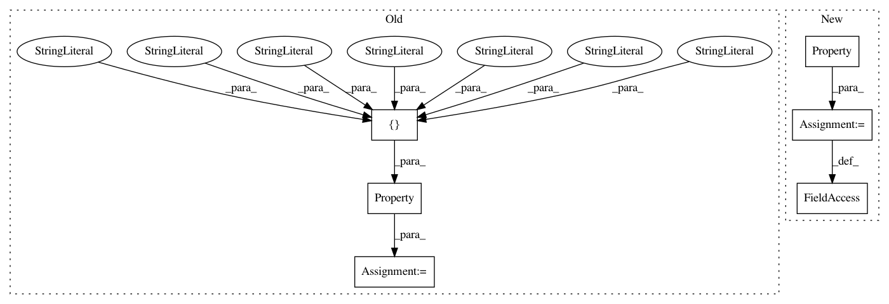

2d568b3b96506b3d4cbad93aa2673fb56e306111,acoular/sources.py,UncorrelatedNoiseSource,UncorrelatedNoiseSource_1,#,659
Before Change
sample_freq = Delegate("signal")
// internal identifier
digest = Property(
depends_on = ["mpos.digest", "signal.rms", "signal.numsamples", \
"signal.sample_freq", "signal.__class__" , "seed", "loc", \
"start_t", "start", "__class__"],
)
@cached_property
def _get_digest( self ):
return digest(self)
After Change
// Microphone locations.
// Deprecated! Use :attr:`mics` trait instead.
mpos = Property()
def _get_mpos(self):
return self.mics
In pattern: SUPERPATTERN
Frequency: 3
Non-data size: 6
Instances
Project Name: acoular/acoular
Commit Name: 2d568b3b96506b3d4cbad93aa2673fb56e306111
Time: 2018-12-18
Author: gejohe@web.de
File Name: acoular/sources.py
Class Name: UncorrelatedNoiseSource
Method Name: UncorrelatedNoiseSource_1
Project Name: acoular/acoular
Commit Name: da4e43e9036e1b6a7ad0c3d8ca8b1c7b6ec965d3
Time: 2018-12-18
Author: gejohe@web.de
File Name: acoular/sources.py
Class Name: PointSource
Method Name: PointSource_2
Project Name: acoular/acoular
Commit Name: 2b61aada500ba926faba856e96f3712bcf03eb00
Time: 2018-12-18
Author: gejohe@web.de
File Name: acoular/grids.py
Class Name: RectGrid3D
Method Name: RectGrid3D_2